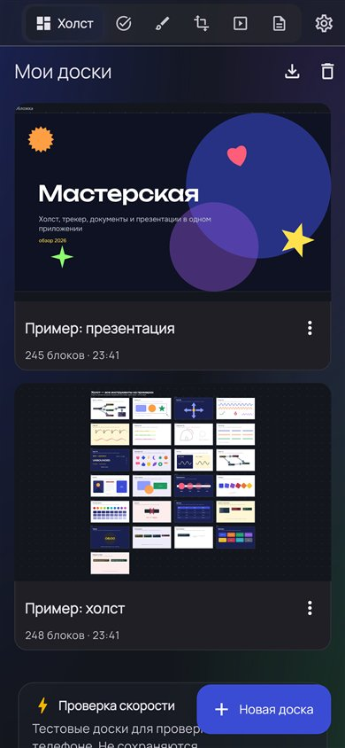
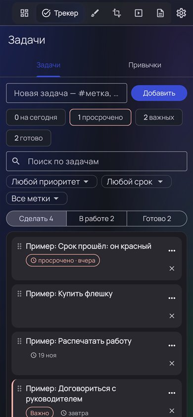
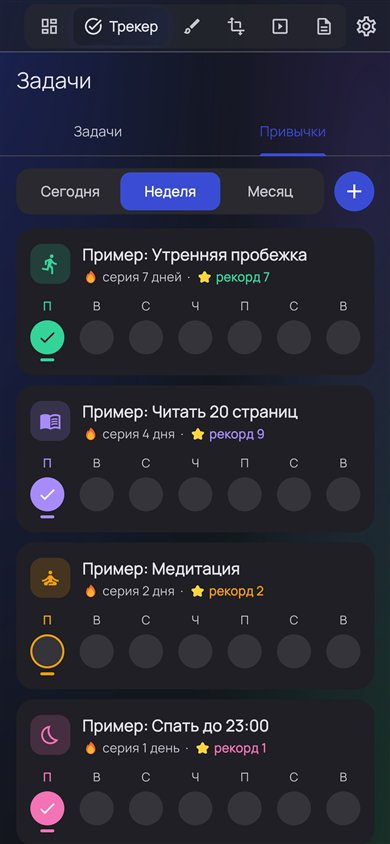
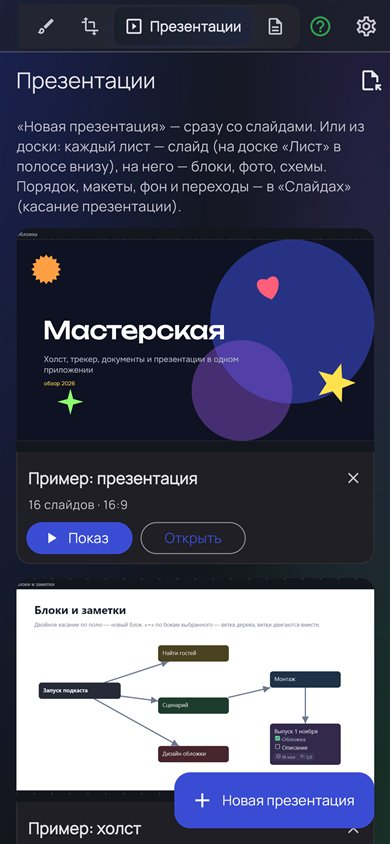
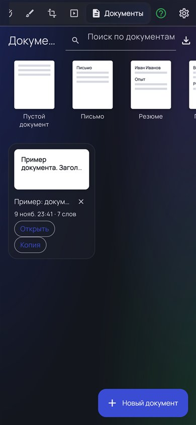

Учёба — в одном приложении
Конспекты на бесконечном холсте, задачи и привычки, рисунки, презентации и документы. Без интернета и без регистрации — всё хранится на вашем устройстве.
Windows · Android · iPhone · Mac. Встроенное обучение покажет каждый раздел.

Скачать
Выберите устройство — подходящее мы уже подсветили.
Windows
Программа для компьютера: Windows 10 и 11, 64-бит. Обычная установка: «Далее» → «Установить», значок на рабочем столе.
Скачать для Windows Установщик · 20 МБ · версия 1.79 · архив без установкиAndroid
Android 7 и новее. Скоро — в RuStore; пока можно скачать файл и установить (разрешите установку из браузера).
Скачать APK APK · 51 МБ · версия 1.79iPhone и iPad
Откройте в Safari и добавьте на экран «Домой»: «Поделиться» → «На экран „Домой“». Работает как приложение.
Открыть в Safari Без установки · данные на устройствеMac
Откройте браузерную версию в Safari или Chrome. В Chrome можно установить как приложение: значок «Установить» в адресной строке.
Открыть в браузере Программа для Mac — позжеЧто внутри
Всё, что нужно для учёбы и проектов, — без переключения между приложениями.
Для кого
Сделано студентом для студентов — и для всех, кто учится или ведёт проекты.
Обучение внутри
Открыли впервые — приложение само покажет, куда нажать: подсветит кнопку, даст попробовать и порадуется вместе с вами.
Ваши данные — ваши
Мы не видим ваших досок, задач и документов.
Как это выглядит
Тёмная, светлая и «Аврора» — выбирайте тему в настройках.




Что нового
Версия 1.79 — ноябрь 2026
Вопросы
Где хранятся мои данные?
Только на вашем устройстве: мы их не получаем, аккаунт не нужен. Перенести доски на другое устройство — «Настройки» → «Сохранить резервную копию», затем на новом — «Восстановить из копии».
Windows пишет «Система Windows защитила ваш компьютер»
Так Windows реагирует на программы без платной цифровой подписи. Нажмите «Подробнее» → «Выполнить в любом случае».
Android не даёт установить файл
Разрешите установку из браузера, через который скачали: появится запрос «Разрешить из этого источника». Скоро приложение будет в RuStore — тогда установка в одно касание.
Это бесплатно?
Да. Всё, что есть сейчас, — бесплатно и без рекламы.
Нашли ошибку или есть идея?
Напишите в Telegram @OVpike или на rons8375@gmail.com.